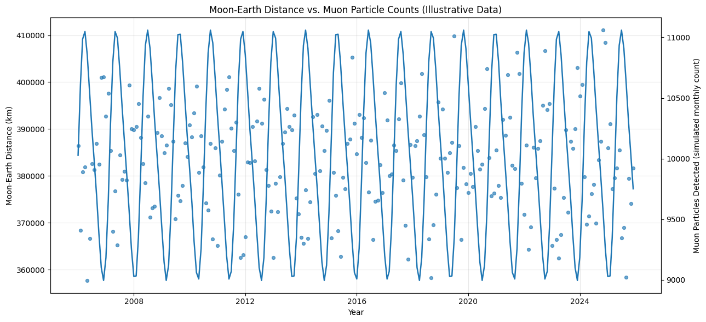
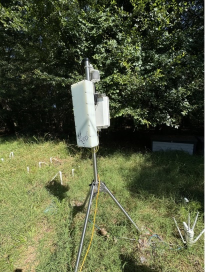
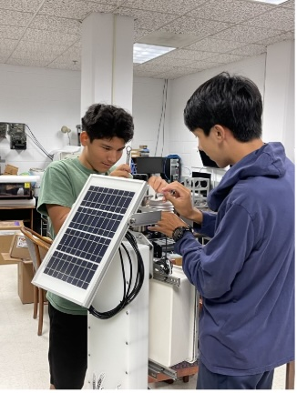

GSU Cosmic Ray & Particle Physics Research
Research Internship at Georgia State University's High-Energy Physics Lab

Python Data Visualizations
Authored custom Python scripts using NumPy, Pandas, and Matplotlib to analyze 20 years of continuous atmospheric cosmic ray transmission data. Modeled orbital transmission variations based on Earth-Moon alignment and atmospheric pressure shifts.

Proton Transmission Soil Moisture Detector
Designed and validated a prototype sensor utilizing proton particle transmission loss through subterranean soil layers to determine high-accuracy moisture content without destructive sampling.

CubeSat Subsystem Integration
Assisted in designing payload integration housing for CubeSat orbital test units. Evaluated mechanical mounting tolerances and thermal isolation for sensitive particle sensors during launch vibration regimes.

Atmospheric Muon Particle Detector
Built and calibrated high-sensitivity scintillator detector assemblies, photomultiplier tubes (PMTs), and signal amplification circuits to record background secondary muon flux at ground level.